الرموز العسكرية: القواعد العامة
1 تعريف الرموز والاستعمال
1. تعريف الرموز العسكرية. هي وسيلة دقيقة وواضحة تستعمل لتمييز أي وحدة عسكرية أو منشآت أو نشاطات أخرى، ويتم توضيحها إما على شكل رموز متكاملة أو بالأحرف أو مصطلحات أو كلمات أو بالألوان.
2. الاستعمال. تستعمل الرموز العسكرية في الحالات التالية:
- أ. لتأشير جميع الخرائط العسكرية.
- ب. لعمل المخططات والشفافات (الكروكيات).
3. إن استعمال هذه الرموز والمصطلحات ضروري جداً من قبل الوحدات العسكرية، ولا سيما أنها الوسيلة الوحيدة التي يمكن بها تمييز حجم الوحدة، نوع السلاح، الموقع، التحركات، النشاطات والمنشآت العسكرية لمختلف الوحدات في الميدان، سواء لنا أو للعدو وبهذه الطريقة يمكن تثبيت جميع هذه المعلومات على الخرائط واللوحات والشفافات.
4. الرموز العسكرية لا تطبع بشكل ثابت على الخرائط، والسبب في ذلك أن الوحدات أو أي نشاط تمثله هذه الرموز قابلة للتغيير باستمرار، كتنقل القطعات من مكان لآخر ... إلخ، وهناك سبب مهم جداً وهو المحافظة على السرية، حيث أن جميع هذه الخرائط أو الشفافات هي وثائق عسكرية وإذا دعت الحاجة إلى طيها، تستخدم لهذه الغاية خرائط وشفافات خاصة.
2 استخدامات الرموز والألوان
5. استخدامات الرموز. تستخدم الرموز لبيان ما يلي:
أ . القطعات / القوات. وتشمل ما يلي:
- (1) النوع. وحدة قيادة منشآت أو نقاط ملاحظة... إلخ.
- (2) الصنف. مشاة، دروع، مدفعية، هندسة ... إلخ.
- (3) الحجم. فرقة، لواء، كتيبة، سرية... إلخ.
- (4) المناطق. المواقع، الحدود، الأهداف... إلخ.
- (5) الحركة. التقدم، الهجوم، التنقل... إلخ.
ب. الأسلحة والمعدات. تبين أنواعها مثل رشاش، مدفع، آلية، دبابة... إلخ.
ﺠ . معلومات متفرقة. مثل التحصينات، الطرق والموانع، خط أنابيب، مطارات أو أي نقاط أخرى.
6. الألوان المستخدمة للقوات البرية. تستعمل ألوان خاصة لرسم هذه الرموز، وذلك لسهولة الإيضاح والتمييز البري وهي:
- أ . الأزرق. لتمثيل قطعاتنا والقطعات الصديقة ويشمل المنشآت والأسلحة والنيران.. إلخ.
- ب. الأحمر. لتمثيل قطعات العدو وجميع نشاطاته من منشآت ونيران وأسلحة.. إلخ.
- ﺠ . الأخضر. يمثل مختلف الموانع سواء لنا أو للعدو مثل حقول الألغام، التدميرات.. إلخ.
- د. الأصفر. للمناطق الملوثة بالعوامل الكيماوية أو النووية أو البيولوجية لكلا الطرفين.
- ﻫ . اللون البني. يدل على الطرق.
- و. الكتابة. تكتب جميع الكتابات الخاصة بقواتنا والقوات الصديقة على الشفافات والخرائط باللون الأزرق أما الكتابة الخاصة بالعدو فتكتب باللون الأحمر.
- ز. الألوان الأخرى. تعتبر احتياطاً وإذا ما دعت الحاجة إلى استخدامها فيجب أن يبين الغرض من استخدامها كما يستخدم اللون الأسود في الكتابة التوضيحية.
7. الألوان المستخدمة للقوات البحرية.
- أ . اللــــون الأزرق. قواتنا والقوات الصديقة.
- ب. اللون الأحمـــــر. العدو.
- ﺠ . اللون الأخضــر. يمثل مختلف الموانع سواء لنا أو للعدو مثل حقول الألغام، التدميرات.. إلخ.
- د . اللون البرتقالي. العدو المحتمل.
- ﻫ . اللون البنــــــي. سفن غير معروفة (الأهداف غير المعروفة).
3 الخطوط ومجموعات الوقت
8. الخطوط المزدوجة. في حالة عدم وجود ألوان مختلفة وعند استعمال لون واحد فقط فترسم رموز العدو بخط مزدوج، بينما ترسم الرموز لقطعاتنا بخط منفرد.

مثال: يبين قيادة فرقة مشاة العدو.
9. الخطوط المتصلة والمتقطعة.
- أ . تمثل الخطوط المتصلة المواقع الحقيقية أو الحالية، الأهداف، الحدود... إلخ.
- ب. تمثل الخطوط المتقطعة المواقع المخطط لها أو للمستقبل.
- ﺠ . يرسم الرمز الأساسي للوحدة بخط متصل.
أمثلة:

10. مجموعة الوقت والتاريخ. تستعمل مجموعة الوقت والتاريخ عادة عند فتح نقطة إدارية أو وقت وصول وحدة ما إلى موقع جديد، تكتب مجموعة الوقت والتاريخ إما تحت أو داخل الرمز.
أمثلة:
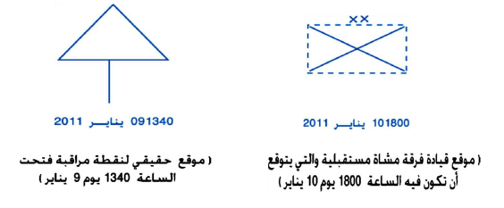11. إشارات الاستفهام. تستعمل إشارة الاستفهام بالإضافة لرمز العدو في حالة عدم معرفته أو في حال الشك في المعلومات عن الرمز ومكان الإشارة يدل على أن المعلومات غير المعروفة أو غير المؤكدة.
أمثلة:
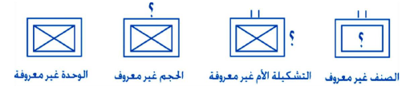
4 الدلالة على المواقع
12. الدلالة على المواقع.
أ . أماكن الوحدات.
(1) للدلالة على مكان الوحدة أو النقطة يمد خط مستقيم أو منحنى من منتصف قاعدة الرمز لينتهي بمكان الوحدة بالضبط، مثال:

(2) موقع دفاعي محتل من قبل فصيلة المشاة 3 من السرية الأولى من الكتيبة 1 (يجب أن يكون الجانب المغلق من الشكل البيضوي باتجاه العدو، ويضم هذا الشكل الحد الخارجي للموقع المحتل)، مثال:

(3) موقع دفاعي محتل من قبل فصيلة.

(4) سرية مشاة آلية تعمل كقوة واجب في الدفاع.

(5) منطقة تجمع كتيبة المشاة 3 من اللواء 2.

(6) منطقة تجمع مقترحة لكتيبة المشاة 3 من اللواء 2.

ب. المواقع الوهمية.
(1) موقع وهمي لكتيبة.

(2) موقع وهمي لكتيبة مدفعية.

ﺠ . مواقع الدوريات. تؤشر دوائر مفرغة غير مظللة على شكل منحنى وباللون الأزرق لدورياتنا واللون الأحمر لدوريات العدو.

د. مواقع القيادات. للدلالة على مقر قيادة ما لتشكيلة أو وحدة، يمد خط مستقيم أو منحنى من يسار الرمز لينتهي بمقر تلك الوحدة، مثال:
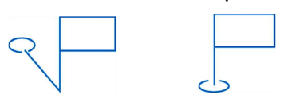ﻫ . مواقع عدة قيادات في مقر واحد. يمد خط مستقيم بحيث يضم هذه القيادات، مثال:
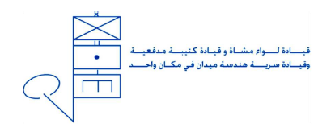و. مجموعة وحدات في مكان واحد. إذا كان هناك عدة وحدات غير القيادات في موقع واحد، تجمع الرموز لهذه الوحدات وتوضع ضمن قوس، ولتعيين المكان يمد خط مستقيم من منتصف القوس إلى المكان بالضبط مثال:

5 القيادات وتأليف الرموز
13. قوات الواجب. تشكل قوة خاصة تسمى قوة الواجب ويجمع لها قوات مختلفة للقيام بواجب معين ويبين تجميع هذه القوة بين قوسين تحت قيادة واحدة وتميز بالعلامة؟ مثال:

14. قيادة التشكيلات العليا. إذا كانت القيادات بمستوى فيلق، يكتفي برسم الرمز الأساسي دون بيان السلاح أو الخدمة ويوضع الاسم أو الرقم داخل الرمز، مثال:

15. تأليف الرموز. يؤلف الرمز كاملاً من المعلومات التالية:

6 المعلومات الإضافية والحدود
16. معلومات إضافية.
أ . الوحدة الأم والوحدات المتفرعة، يوضع رقم الوحدة الأم عادة على يسار الرمز، وإذا أردنا توضيح القيادة أو التشكيلة الأعلى لهذه الوحدة، توضع الإشارة على يسار الوحدة الأم وتضاف القيادة الأعلى، أما رقم الوحدة الأساسية فيوضع على يمين الرمز.
مثال 1: يوضح هذا المثال السرية 1 من كتيبة الدبابات 4 من لواء الدروع 35 من الفرقة 9.

مثال 2:
أ . يوضح هذا المثال الجماعة الحضيرة الثانية من الفصيل 3 من سرية المشاة 1 من كتيبة المشاة 5.
ب. إذا قامت وحدة إدارية بإلحاق أو تزويد نقطة إدارية أو إدامة، تشكيلة أو وحدة ما، فيوضع رقم الوحدة التي قدمتها على يسار الرمز بينما رقم الوحدة المستفيدة على اليمين.

مثال:  يبين نقطة وقود للواء الأول من الفرقة الثانية.
يبين نقطة وقود للواء الأول من الفرقة الثانية.
ﺠ . الوظائف وعيار السلاح. عندما يراد تمييز لأي وحدة إدامة أو إدارية أو تمييز عيار لسلاح ما، تعين هذه الوظائف أو العيار وتكتب إما على يمين الرمز أو تحته وبين قوسين.
مثال: 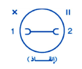 نقطة إنقاذ للكتيبة 2 من اللواء 1 (إنقاذ)
 كتيبة المدفعية 50 عيار
المدفع 155 ملم
كتيبة المدفعية 50 عيار
المدفع 155 ملم
د. الملحقون والمنفصلون. عند إلحاق وحدة ما إلى وحدة أخرى لتعزيزها، توضع الإشارة (+) على أعلى يمين الرمز، وكذلك إذا انفصلت وحدة فرعية عن وحدة أخرى توضع الإشـارة (-) على يمين الرمز.
أمثلة:
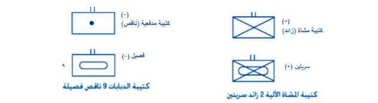ﻫ . إذا كان هناك اختلاف بين صنف أو خدمة لوحدة ما تعمل مع وحدة أخرى، فيوضع نوع الصنف أو الخدمة أو السلاح للوحدة الصغيرة داخل الرمز الأساسي، ويضاف رمز الصنف أو الخدمة للوحدة الكبيرة ويوضع تحت الرمز الأساسي عند الرغبة.
مثال:  يبين هذا المثال فصيلة إشارة في وحدة دبابات.
يبين هذا المثال فصيلة إشارة في وحدة دبابات.
17. الحدود. تؤشر الحدود بخطوط متصلة ويوضح عليها حجم الوحدة التي تشغل هذه الحدود ويوضح اسم أو رمز أو رقم الوحدتين المتجاورتين على خط الحدود بالقرب من إشارة حجم الوحدة.
| # | الاسم – الاصطلاح | الرمز |
|---|---|---|
| 1 | الحدود الجانبية: حدود تفصل لواء المشاة 1 ولواء المشاة 2 |  |
| 2 | حدود تفصل بين كتيبة المشاة 4 وكتيبة المشاة 3 |  |
| 3 | حدود تفصل بين سرية المشاة 2 وسرية المشاة 3 | 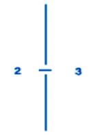 |
| 4 | حدود تفصل بين الفيلق 1 والفرقة 5 (الحدود الجانبية لوحدات وتشكيلات غير متساوية في الحجم أو مختلفة الصنوف يبين بالرمز حجم الوحدة الأكبر أو الصنف غير المشاة ويكتب حجم الوحدة الأصغر). |  |
| 5 | حدود تفصل بين فرقة المشاة 3 والفرقة المدرعة 9 (يبين صنف غير المشاة). | 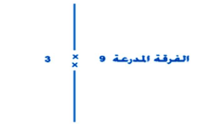 |
| 6 | الحدود الخلفية: الحدود الخلفية إلى اللواء المدرع 5 وفرقة المشاة 43 تبين هذه الحدود نهاية مسؤولية الوحدات الفرعية وليس التشكيلية أو الوحدة الأم، ويبين نوع السلاح أو الصنف أو الجنسية لتلافي التشويش. |  |
| 7 | في حالة وجود قوات صديقة متجاورة يحب وضع رقم التشكيلة وجنسيتها بين قوسين. |  |
| 8 | أ. حدود الفيلق 1 وعلى اليمين الفيلق 3 قوات صديقة وعلى اليسار الفرقة 5 وفي منطقة
الفيلق 1 توجد الفرقة 4 في القاطع الأيسر واللواء 2 في القاطع الأيمن. ب. تبين أيضاً الحدود الخلفية للفرقة 4 واللواء 2 مع الفيلق 1 فهي كما مبينة وإلى الخلف. ملحوظة: في الحدود الخلفية يرسم رمز الوحدة. |
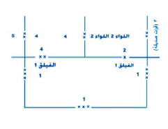 |
| 9 | الحدود الأمامية لمنطقة المعركة (ح أ م م): تؤشر بسلسلة متقطعة من الخطوط المنحنية (يكون التحدب باتجاه العدو باللون الأزرق لنا والأحمر للعدو). |  |
| 10 | يؤشر (ح أ م م) للعدو عند استعمال لون واحد بخط منحني مزدوج بينما يؤشر بخط منحني مفرد لقواتنا. |  |
| 11 | الحدود المقترحة (المستقبلية): الحدود المقترحة يبين كتيبة المشاة 3 وكتيبة المشاة 4 |  |
| 12 | يؤشر بخط متقطع ويكتب عليها وقت وتاريخ التنفيذ بالطرق الموضحة في المثال |  |
| 13 | تمركز كتيبة المشاة 3 من اللواء 6 المجاور لنهاية حدود اللواء 4 وكتيبة المشاة 5 |  |
| 14 | تحديد مسؤولية الوحدات: عندما تكون السرايا مسؤولة عن الحدود القصوى لمنطقة المعركة (ح ق م م) والفرقة مسؤولة عن (ح ق س). |  |
| 15 | عندما تكون الكتيبة مسؤولة عن الحدود القصوى لمنطقة المعركة (ح ق م م) والفرقة مسؤولة عن (ح ق س). |  |
7 العمليات الهجومية والأهداف
18. الأهداف.
أ . ترسم الأهداف بخطوط متصلة تضم المنطقة المراد مهاجمتها (يوضع داخل الشكل كلمة هدف متبوعة برقم أو حرف أو اسم رمزي، كما يمكن وضع اسم الوحدة التي ستهاجم).

ب. في حالة تقسيم الأهداف للوحدات المرؤوسة يمكن تعيين حدود تقسم الهدف أو تجزئة الهدف إلى أهداف صغيرة وتسميتها وترسم أهدافنا باللون الأزرق.

19. خط اتجاه الهجوم. يرسم بالخط المفرد لتحديد حركة القطعات / القوات على الطرق أو المحاور الموجودة (يستعمل عند رغبة القائد لتنسيق خطة رمي ومناورة خاصة في عمليات الهجوم الليلي والهجمات المعاكسة).
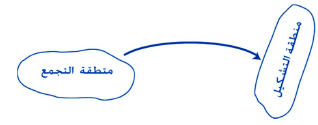يرسم الخط المزدوج في حالة الانفتاح وعدم تحديد حركة القطعات القوات على طريق معين

وحدة كلفت باحتلال أهداف متتالية دون تغيير في اتجاه الهجوم يوضح ذلك بأسهم متتالية أو يمر السهم عبر الأهداف.

20. سهم متابعة الهجوم بالأمر. يستعمل سهم المؤشر بالأمر عندما يطلب من وحدة أن تكون جاهزة لمتابعة الهجوم باتجاه السهم ويستعمل عادة مع بيان الحدود والأهداف، ويجب أن يكون هذا السهم بطول مناسب وبخط مستقيم بحيث لا يؤدي إلى التباس بينه وبين سهم خط اتجاه الهجوم.

محور هجوم رئيسي (يوضح رأس لسهم مزدوج)

21. محاور التقدم.
أ . يرسم بسهم مزدوج مبيناً عليه اسم رمزي أو كلمة محور التقدم أو رمز الوحدة.

ب. يرسم بخط متقطع مع إضافة وقت وتاريخ تنفيذه داخل الرسم.

22. خط البدء (خ ب). يرمز إلى خط البدء بخط طولي متصل مبيناً عليه الوقت والتاريخ.

23. خط التماس (خ ت). يمكن أن يكون خط البدء هو خط التماس.

24. منطقة رأس الجسر. يرسم بخط متصل مع وضع الأهداف بداخله.

25. التسلسل (التغلغل). يحدد خط التسلل بخطين مع وضع كلمة التسلل والوحدة المتسللة في المنتصف من الخطين.
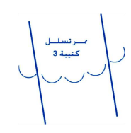26. خطوط الأخبار. تعيين هذه الخطوط سلفاً في عمليات التقدم أو الهجوم وذلك لتبليغ الوحدات العليا عند اجتيازها وتعطي أسماء رمزية.

27. عمليات التخطيط للهجوم المعاكس. تستعمل الرموز التالية:
أ. منطقة الاختراق المسموح به باللون الأحمر. | ب. الهدف. | ﺠ . اتجاه الهجوم وخط البدء ومنطقة التشكيل. | د. موقع الوحدة المعنية لشن الهجوم المعاكس. | ﻫ . خط البدء موقع القوات الأمامية. | و. منطقة التشكيل للوحدة المهاجمة.

28. تخطيط مواقع الخرق. مدى الخرق المسموح به لقوات العدو ضمن مواقع قواتنا الدفاعية على ضوء التخطيط لعمليات الهجوم المعاكس وأشر حدود الخرق / الاختراق باللون الأحمر.

29. رموز الوحدات التي تقوم بأعمال الحماية.

30. قتال الإعاقة. كتيبة مشاة آلية 35 تعمل في الإعاقة خلال القتال المستمر.

31. كتيبة مشاة من القوات الصديقة محاصرة. يوضع حجم الوحدة داخل الدائرة ويرسم الرمز بالأزرق والمثلثات بالأحمر.

32. كتيبة مشاة معادية محاصرة. (يرسم الرمز بالأحمر والمثلثات بالأزرق وللداخل).
8 التزويد والطرق
33. طرق السير. نقاط البدء ونقاط الانتشار.

34. طرق التزويد الرئيسية (ط.ت.ر).
أ . في الدفاع. تمتد من طريق التزويد الرئيسية إلى الحدود الخلفية للألوية الأمامية.
ب. في التعرض. يمكن أن تمتد طريق التزويد الرئيسية أمام خط البدء إلى منطقة هدف الفرقة بخط متقطع.
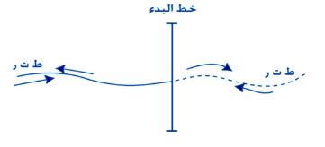35. طريق التزويد (ط.ت).
أ. في الدفاع. تمتد طريق التزويد إلى نقليات (ب) اللواء في حالة تجميعها ويمكن أن تمتد إلى نقطة خلف منطقة دفاع الكتيبة وخط تزويد الكتيبة يمتد من خط تزويد اللواء إلى نقليات (أ) ويمكن أن يمتد إلى نقطة خلف مواقع السرايا الأمامية.
ب. في التعرض. يمكن أن تمتد طريق التزويد إلى هدف الوحدة المعنية.
ملاحظة: إذا عرفت نقاط البدء والانتشار فلا حاجة لوجود الأسهم.

9 جداول الرموز الأساسية
أ . الوحدات
| # | الوصف | الرمز | معنى الرمز |
|---|---|---|---|
| 1 | وحدة |  |
مستطيل |
| 2 | قيادة |  |
مستطيل مع خط مستقيم من اليسار |
| 3 | نقاط المراقبة / الملاحظة |  |
مثلث |
| 4 | نقاط إدارية / إدامة |  |
دائرة |
ب. الصنف
| الوصف | الرمز | معنى الرمز |
|---|---|---|
| المشاة |  |
تقاطع مجاند |
| المشاة الجبلية | جبل مظلل | |
| الدروع |  |
جنزير دبابة |
| المدفعية |  |
قنبلة |
| الهندسة |  |
جسر |
| الإشارة | 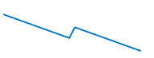 | وميض البرق |
| إلكتروني |  |
موجة إلكترونية |
| النقل |  |
عجلة آلية |
| الخدمات الطبية |  |
هلال |
| التصليح والإنقاذ |  |
مفتاح آلية |
| التموين |  |
مفتاح |
| المستودعات |  |
دائرة مع تقاطع أسلحة |
| المالية والرواتب | 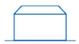 | صندوق قوي |
| أسلحة دمار شامل |  |
تقاطع حوجلتين |
| شؤون عسكرية/ مدنية |  |
درع |
| بريد |  |
بوق |
| البرمائية | 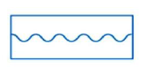 | أمواج وتوضع في وسط المستطيل |
| الأسطول (البحري) |  |
مرساة |
| ضد الدبابات |  |
رقم ثمانية |
| ضد الطائرات |  |
حرف A بالإنجليزي |
| بحرية |  |
أمواج خفيفة |
ﺠ . الحجم
| الرمز | الوحدة | ملاحظات |
|---|---|---|
| • | جماعة |
عند وضع الرمز فوق رمز الحجم، فإنه يدلّ على قوة واجب أو مجموعات قتال. |
| •• | مفرزة أكثر من جماعة وأقل من فصيل/فصيلة | |
| ••• | فصيل/ فصيلة | |
| | | سرية | |
| || | كتيبة أو ما يعادلها | |
| ||| | مجموعة كتيبة أقل من لواء | |
| X | لواء | |
| XX | فرقة | |
| XXX | فيلق | |
| XXXX | جيش | |
| XXXXX | مجموعة جيوش |